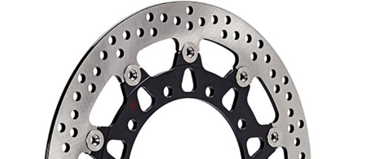
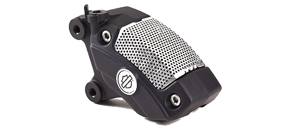
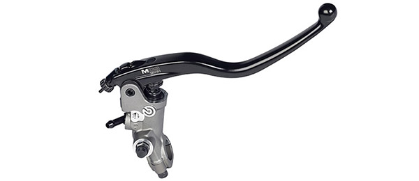

Differences in mechanical configuration, usage, performance and even design make each model of motorcycle unique and destined for a specific type of motorcyclist. And the braking system must also fully satisfy the specific needs of the vehicle and its rider. Brembo designs and manufactures each individual part to ensure that it delivers maximum performance as well as superlative reliability and durability. Brembo brake discs are the industry benchmark for innovation and quality. Brembo brake calipers embody state of the art design and performance, while Brembo master cylinders apply technology to ensure comfort and reliability. This is why the world's most prestigious motorcycles are equipped with Brembo braking systems.
Discs
The brake disc is a fundamental component in ensuring the efficacy and power of a braking system. The decisive factors in achieving more immediate and safer braking action - especially in extreme conditions - are the ability to transfer braking torque, resistance to thermo-mechanical stress and the rapid dispersal of the heat generated by braking. To meet these requisites fully, Brembo brake discs are manufactured with superior quality raw materials: in particular, these include special stainless steel alloys for the brake rotors, and aluminium or steel alloys for the rotor hats.
Calipers
As a result of the exclusive technology used in their manufacture, Brembo aluminium calipers boast superlative performance in terms of braking power, control and comfort, as well as design without par in the motorcycle segment. State of the art design and manufacturing processes make it possible to produce a light, compact and extremely stiff caliper body, whereas precisely engineered hydraulic components maximise the hallmark power and controllability of Brembo calipers. The use of superior aluminium alloys and exclusive manufacturing processes, together with constant innovation in the design stage, make Brembo calipers extraordinarily stiff, ensuring incisive, immediate braking power and constant brake lever travel.
Master Cylinders
Brembo master cylinders guarantee immediate, controllable braking power in all conditions. The ergonomics of these components has also been perfected to ensure a linear response at all times. They are made from cast or pressure die cast aluminium - a material combining lightness, strength and superior finish quality - and are produced with both separate and integrated reservoirs. Brembo's range of products includes radial or axial front master brake cylinders, clutch pumps and rear master brake cylinders
